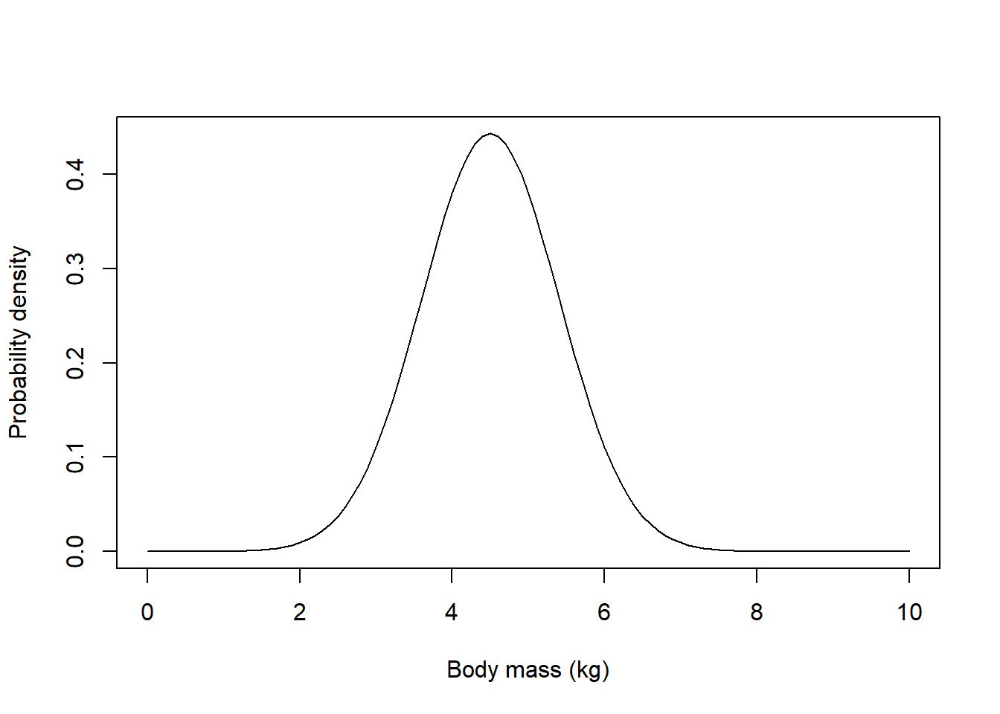

First Lecture
NRES 746
August 23, 2016
Algorithmic vs standard statistics: a brief demonstration
standard t test
First, let’s go through a very basic review.
Here is a made-up data set. Let’s imagine we are interested in seeing if the average height of study organisms in Group A are different from those in Group B.
data <- data.frame(
GroupA = c(175, 168, 168, 190, 156, 181, 182, 175, 174, 179),
GroupB = c(185, 169, 173, 173, 188, 186, 175, 174, 179, 180)
)
summary(data)## GroupA GroupB
## Min. :156.0 Min. :169.0
## 1st Qu.:169.5 1st Qu.:173.2
## Median :175.0 Median :177.0
## Mean :174.8 Mean :178.2
## 3rd Qu.:180.5 3rd Qu.:183.8
## Max. :190.0 Max. :188.0sample.size <- length(data$GroupA)
reshape_data <- data.frame(
Group = rep(c("A","B"),each=sample.size),
Height = c(data$GroupA,data$GroupB)
)
plot(Height~Group, data=reshape_data)
observed_dif <- mean(data$GroupA) - mean(data$GroupB)
observed_dif## [1] -3.4You probably recognize the standard t-test below. For now, we are assuming that the samples come from normally distributed populations with equal variances.
t.test(data$GroupA,data$GroupB, var.equal=TRUE, paired=FALSE)##
## Two Sample t-test
##
## data: data$GroupA and data$GroupB
## t = -0.94737, df = 18, p-value = 0.356
## alternative hypothesis: true difference in means is not equal to 0
## 95 percent confidence interval:
## -10.93994 4.13994
## sample estimates:
## mean of x mean of y
## 174.8 178.2But let’s imagine now that we didn’t know about the t-test- but we still want to accomplish the same goal.
First, let’s review the question and state the problem clearly:
We want to know if these two populations are different- specifically if the expected value (mean) differs. We have small random (but representative) samples from these two putative populations.
Can we build an algorithm to generate a p-value?
Let’s start by simulating a data population under the null hypothesis.
lots <- 1000000 # large number approximating infinity in this example!
popMean_null <- mean(reshape_data$Height) # assume groups A and B come from a population with common mean
popSD_null <- sd(reshape_data$Height)
popData_null <- rnorm(n=lots,mean=popMean_null,sd=popSD_null) # the statistical "population" of interest (under null model)Then we can sample from that data population:
sampleA <- sample(popData_null,size=sample.size)
sampleB <- sample(popData_null,size=sample.size)
sampleA## [1] 172.4679 174.2837 177.2735 173.4819 176.6347 167.6650 187.7026
## [8] 178.3189 189.4459 181.7964difference <- mean(sampleA)-mean(sampleB) # difference between sample meansThen we can generate a distribution of “anomalies” (differences between the group means) expected under the null hypothesis (there is fundamentally no difference between the two groups):
reps <- 1000
null_difs <- numeric(reps)
for(i in 1:reps){
sampleA <- sample(popData_null,size=sample.size)
sampleB <- sample(popData_null,size=sample.size)
null_difs[i] <- mean(sampleA)-mean(sampleB)
}
hist(null_difs)
abline(v=observed_dif,col="green",lwd=3)
Now, all we need to do is compare this more quantitatively with the observed among-group difference…
ordered_difs <- sort(abs(null_difs)) # first order the distribution of null results in terms of absolute magnitude of difference
higher_anomaly <- length(which(ordered_difs>=abs(observed_dif)))
p_value <- higher_anomaly/reps # probability of getting a value with anomaly as or more extreme than observed, given null hypothesis is true...
p_value## [1] 0.359Now, what about if we wanted to relax the assumptions – allow for unequal sample sizes, or unequal variances, for example…
or non-normal distributions?
The value of the algorithmic, brute-force approach to statistics is the flexibility! We have to be aware of assumptions in all of our analyses, but when we have some computational tools at hand, we can readily relax these assumptions.